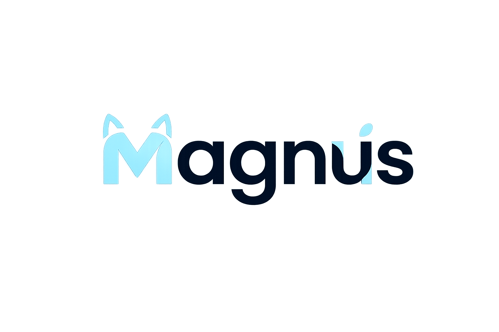

링크를 사용할 경우 동영상이 삭제되면 오류가 날 수 있습니다.
사진을 눌러 변경하세요. 드래그와 확대 후 원형 프로필에 맞춰 저장할 수 있습니다.
GIF/WebP 움직이는 이미지 사용 가능, 최대 8MB까지 업로드할 수 있습니다.
권장 해상도는 1920x1080 이상입니다. GIF/WebP 움직이는 배경도 사용할 수 있습니다.
배경 이미지는 최대 12MB까지 업로드할 수 있습니다.
음악별 배경이 설정되어 있으면 이 값만큼 위에 덮어씌워집니다. 배경이 없으면 환경설정 배경만 사용됩니다.